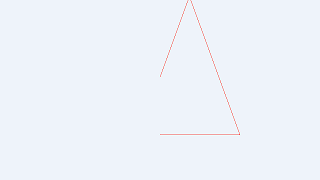

Ch4-2 顶点着色器
顶点着色器（vertex shader）是图形管线中的一个着色器，用于处理和生成顶点。若非Task/Mesh管线，那么顶点着色器是图形管线中最初执行的着色器。
顶点着色器对每个顶点执行一次。
顶点着色器的内置输入
用GLSL编写的顶点着色器有以下内置输入：
全局变量 |
|
|---|---|
int gl_VertexIndex |
表示当前顶点的索引 |
int gl_InstanceIndex |
表示当前实例的索引 |
int gl_DrawID |
在多重绘制或间接绘制命令中，表示当前绘制的索引 |
int gl_BaseVertex |
表示本次绘制中的起始顶点索引 |
int gl_BaseInstance |
表示本次绘制中的起始实例索引 |
对于非索引绘制命令，比如vkCmdDraw(commandBuffer, vertexCount, instanceCount, firstVertex, firstInstance)，gl_BaseVertex值为firstVertex，gl_VertexIndex必然不小于该值，类似地，gl_BaseInstance值为firstInstance，gl_InstanceIndex必然不小于该值。
对于索引绘制命令，比如vkCmdDrawIndexed(commandBuffer, indexCount, instanceCount, firstIndex, vertexOffset, firstInstance)，gl_BaseVertex值为vertexOffset，gl_VertexIndex为命令缓冲区中的与firstIndex相应的索引加上vertexOffset。
从OpenGL转来的程序员注意gl_InstanceIndex语义同gl_InstanceID不同（gl_InstanceID从0开始，不计算gl_BaseInstance）。
gl_DrawID是从OpenGL所使用的GLSL继承而来的，因此不写作gl_DrawIndex。
顶点着色器的内置输出
用GLSL编写的顶点着色器有以下内置输出：
预定义块gl_PerVertex 的成员 |
|
|---|---|
vec4 gl_Position |
顶点位置 |
float gl_PointSize |
点的大小，适用于绘制点 |
float gl_ClipDistance[] |
自定义剪裁参数 |
float gl_CullDistance[] |
自定义剔除参数 |
-
所有的输出都是可选的，非必须输出。
-
gl_PerVertex意味着这些输出是相对于每个顶点而言的，gl_PerVertex是没有实例名称的预定义块，意味着你不需要使用任何前缀就可以直接使用它的成员，即直接写
gl_Position而不是写gl_PerVertex.gl_Position。
gl_Position
gl_Position的数值是被标准化的，即NDC坐标。
如果顶点着色器之后只有一个片段着色器或没有任何着色器（因为不输出颜色，可以只输出深度值到片段所在位置），应当输出gl_Position（考虑到连gl_Position都不必输出的情形应当是纯粹的计算和数据存储，应当用计算着色器）。
gl_Position在栅格化时发生线性插值。
gl_ClipDistance和gl_CullDistance
gl_ClipDistance和gl_CullDistance名称中有distance是因为：在概念上这两组数值各是到自定义剪裁平面和自定义剔除平面的距离。
对于gl_ClipDistance，剪裁平面这一概念略微繁琐，简而言之：
对于任意片段，若gl_ClipDistance数组中的任一元素数值小于0，则该片段被丢弃。
对于gl_CullDistance，数组中每个元素代表着到不同剔除平面的距离，则：
对于任意图元，若构成其图形的所有顶点皆满足到某一剔除平面的距离小于0（比如gl_CullDistance[0]都小于0），则图元被整个丢弃。
在栅格化前，根据图元中所有顶点的gl_CullDistance决定是否保留图元，
在栅格化时，gl_ClipDistance发生线性插值，根据结果决定是否保留片段。
gl_CullDistance也是片段着色器中逐片段的输入，即对于保留下来的片段，gl_CullDistance的线性插值结果会被传入片段着色器。
要使gl_ClipDistance起效，需开启设备特性中的shaderClipDistance，gl_ClipDistance数组元素个数最大不超过硬件限制中的maxClipDistances。
要使gl_CullDistance起效，需开启设备特性中的shaderCullDistance，gl_CullDistance数组元素个数最大不超过硬件限制中的maxCullDistances。
如果你忘了什么是设备特性，参见创建逻辑设备。
绘制三角形的三条边，令gl_ClipDistance[0]为gl_Position.x的效果如下：
在英伟达显卡上你可能会看到中央被截断的地方也构成了一条边，那是硬件特定的行为。